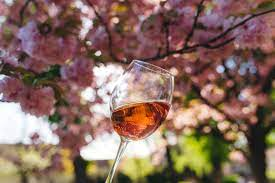

| |
O vinho tinto é um vinho tranquilo de cor vermelha e que possui níveis consideráveis de tanino. São elaborados necessariamente com castas tintas.
|
 |
Os vinhos brancos são vinhos tranquilos de coloração amarela em variados tons, em alguns casos quase incolor e com concentrações imperceptíveis de tanino.
|
|  | Esse tipo de vinho é leve, fresco e bastante aromático. A cor dessa bebida varia entre rosa claro, perolado e alaranjado.
|